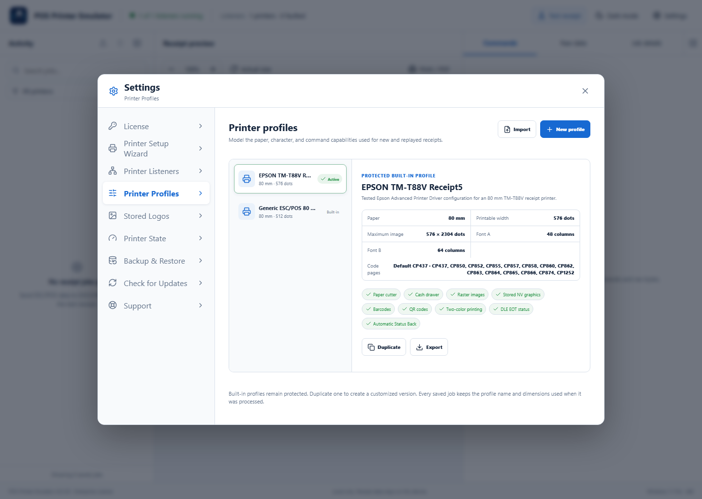
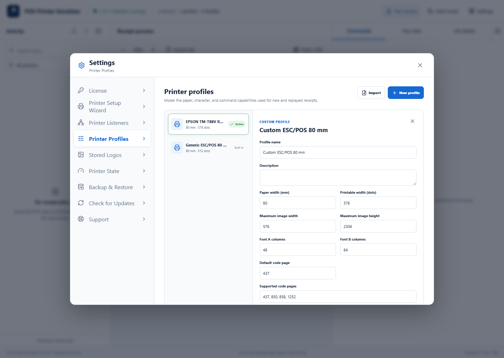

Available with Lite, Pro, and Enterprise. Built-in profiles are protected. Duplicate one when you need a customized version.
1Review the active profile
Open Settings → Printer Profiles. Select a profile to review paper width, printable dots, image limits, font columns, code pages, and supported commands. The green Active label identifies the default for new and replayed jobs.

2Create or duplicate a profile
Select New profile, or select a built-in profile and choose Duplicate. Enter paper size, printable width, maximum raster size, character columns, default and supported code pages, and command capabilities.

3Save, activate, import, or export
Select Save profile, then Use this profile. Assign a different profile directly to a specific Printer Listener when needed. Use Export to save a .ppeprofile file and Import to move it to another installation.
Common profile choices
- Use 80 mm and the documented printable width for standard counter receipts.
- Keep the default code page aligned with the language and symbols printed by the POS.
- Set maximum raster dimensions to the real printer’s limits so oversized images are caught during testing.